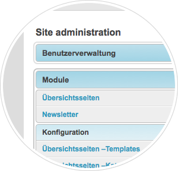

django-grappelli
- Consistent and grid-based look & feel
- Related lookups with Autocompletes
- Inline sortables with Drag & Drop
- Compass-based CSS (coming with 2.4)
- Integrated TinyMCE theme
- Customizable dashboard
- Improved collapsibles
- Unified jQuery-Plugins
- Compatible with django—filebrowser
Developers & Designers
Rapidly build a smart and beautiful CMS based on Djangos automatic admin site and Grappelli.
Editors & Customers
Update your website with an elegant, easy-to-use and feature-rich administration interface.


Finally, with grappelli.dashboard (a stripped–down version of django–admin–tools) you´re able to customize the dashboard.
The latest stable version is 2.3.8 (released in April 2012) and requires Django 1.3.x (official release). Grappelli is licensed under the New BSD License.
Grappelli is developed and maintained by vonautomatisch.